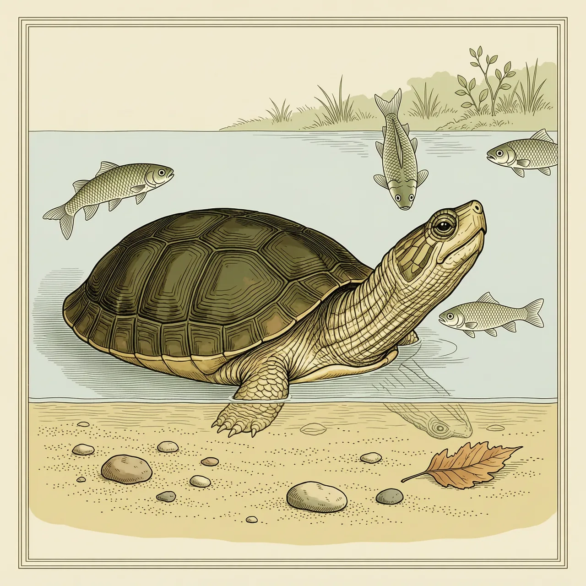
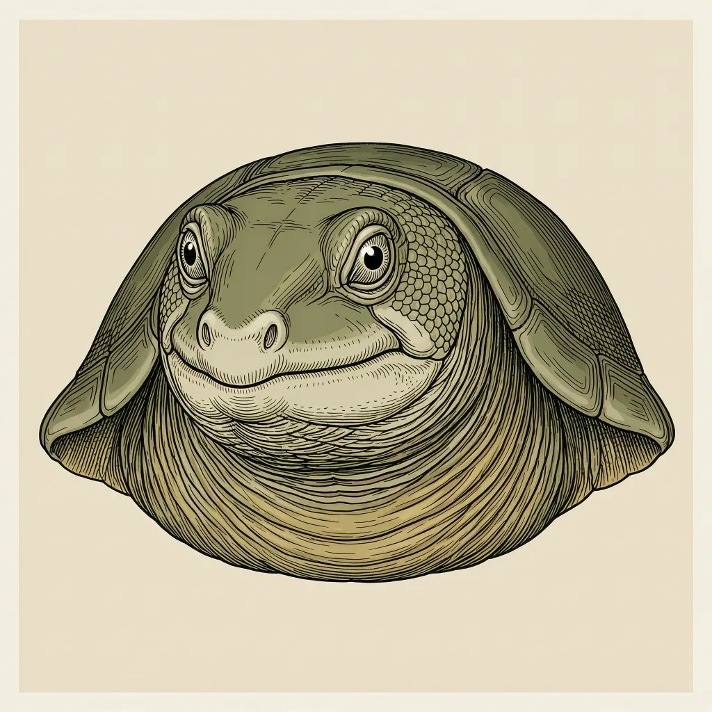

亚洲鳖是东洋界的一种大型软壳鳖，背甲革质、没有坚硬盾片。它把身体埋进河底的泥沙，只露出长吻尖端的两个鼻孔呼吸，静候鱼虾游近后突然伸颈咬住。因肉和蛋被大量捕食、河滩被开发，这个物种在红色名录上被列为易危。
亚洲鳖的分布落在东洋界的河流与湖泊里，偏爱水流缓慢、底部沉着软泥或细沙的河段。这样的底质是它活下去的前提：鳖科动物的背甲边缘柔软，整个身体能压进松软的沉积物里而不被硌伤；流速一快，泥沙被冲走，它就没有地方藏身。热带水域水温常年不低，鱼虾整年活跃，埋伏随时可能有收获。
亚洲鳖的捕食靠一次出手。它把躯干整个埋进泥沙，只留下吻部朝上，那双鼻孔长在吻端，像一截短通气管贴着水底，水从这里过，它不必动。一条鱼或一只虾游进射程，亚洲鳖把脖子猛地弹出去，咬住再拖回泥里。它没有硬壳护体，追不上也打不过，伏击把这些短板绕开了。
和其他龟鳖不同的是，亚洲鳖背上没有一块角质盾片。它的壳是革质皮肤包着的，摸起来更像硬橡皮，所以能把自己挤进泥里，而不像背硬壳的龟那样只能躲在石头下。这份柔软换来的代价也清楚：肉和蛋被人取走，晒太阳的河滩被开发，红色名录把亚洲鳖列为易危。
